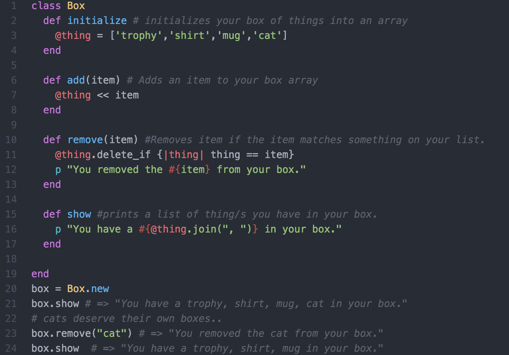

To describe better what classes, instance variables, and instance methods are, I will explain them in a more natural form. Let us say we have a box, this box will be our class. In this box we have things, these things will be our instance variables, anything we do to these things will be instance methods. Instance just means in the instance of this class, that is where it can be used.
So if we have a box class with @things in it such as a trophy, shirt mug and a cat. By putting the at symbol in front of our variable, things, we are making it an instance variable. Now it can be used anywhere within the class box, which makes sense, we need to get to our things no matter what we do with the box.
In the code below, I’ve added some instance methods where you can add, remove and print out a list of the things in our box. Each method has a comment explaining what is going on.
